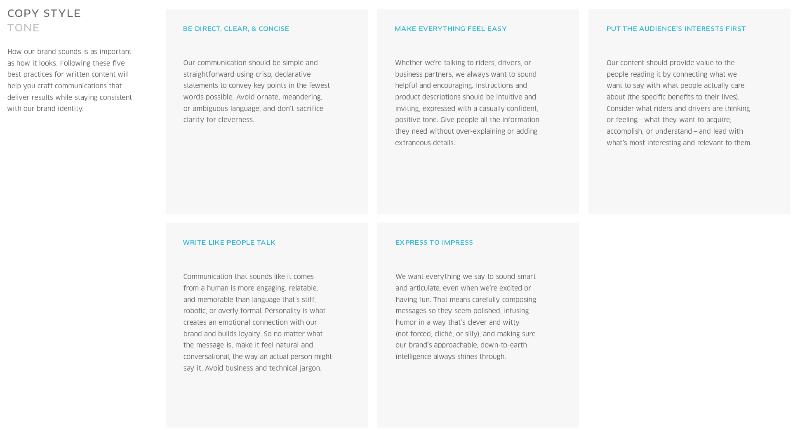
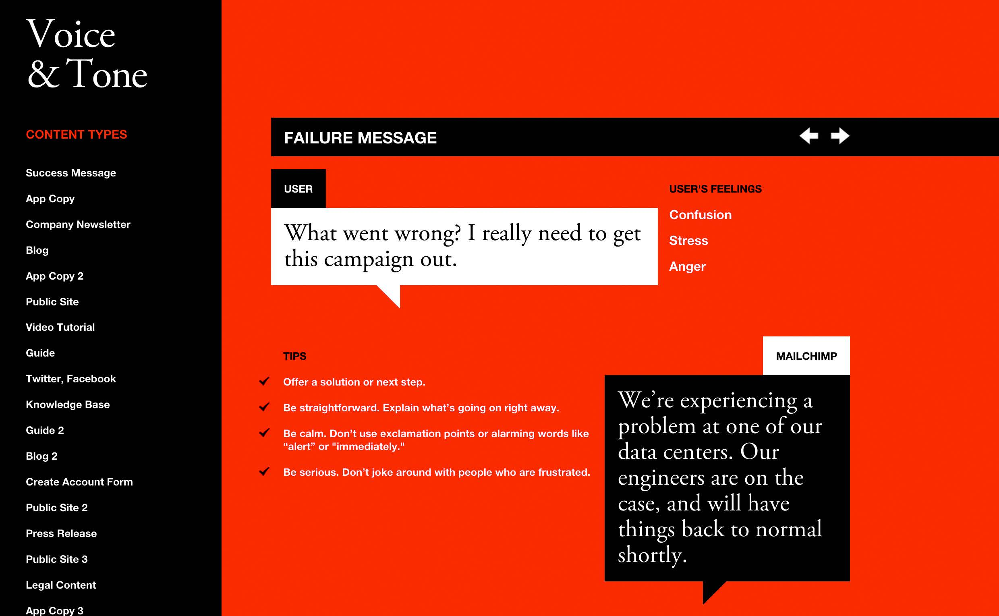

情感化内容策略
面向未来的友好设计
Uber - Copy Style Tone

优步 - 文案识别和情感化指南
我们的品牌的重要性不仅在于视觉，也在于向读者呈现的文案。
我们通过下面5个最佳范例，帮助你保持语言风格的一致性，以及提升文案的品牌识别性。
1. 直接、清晰、简约
避免华丽、迂回、有歧义的语言。
我们的品牌和用户之间的交流应该直接、清晰，利用简短的文字传递核心内容。
2. 消除用户负担
无论线上还是线下，无论我们是和司机、乘客还是商业伙伴进行交流，我们应该秉持一种能够提供帮助和鼓励的姿态。
在用户引导等需要教育用户的地方，我们的文案应该是容易被理解，且呈现友好包容的态度的。
我们提倡一种不那么刻意，并随时透露出来的小自信，以及积极向上的沟通语气。
提供给用户他们所需要足够的信息，避免啰嗦和车轱辘话。
3. 了解用户感兴趣的地方
我们的文案应该成为一种连接器，连接我们要传递的价值观和用户真正在意的点（利益获得和价值提升）。
用心体会车主和乘客的思维方式和具体感受——他们可以接受什么，他们想干什么，他们想了解什么——然后我们的文案要提供他们最感兴趣的，以及和他们的利益息息相关的内容。
4. 口语化
文案应该像是人说出来的，这样的文案会更有吸引力、更可靠、更有效。这是针对死板的书面语、机器语言和官方语言而言的。
个性化人格化的语言方式，可以让我们的品牌和用户之间建立起一种情感化的链接，有助于提升用户的忠诚度。
所以，无论我们要表达什么，请采取更自然的方式，并采取一种对话和交流的态度，像一个真实的人说话那样。避免向用户传递商业和技术术语。
5. 表达方式和用户印象
我们希望我们说出的每句话都是聪明的和明确的，在我们要表达兴奋和愉快的态度的时候也要注意不要太过愚蠢。
我们可以使用风趣的语言去提升我们文案的幽默感，但请注意一个度，避免一些幽默中可能出现攻击和歧视，或者让人觉得这就是个冷笑话。幽默中包含智慧，文案就会大放光彩。
内容策略的发展

面向未来的友好设计
- 内容策略, by Jeremy Keith
- 移动优先, by Luke Wroblewski
- 内容围绕用户, by Cameron Koczon
“设计是为内容服务的，所以内容比设计更重要。脱离内容的设计就不是设计了，只能称为装饰。”
——Jeffrey Zeldman
MailChimp，邮件猩猩的用户研究

优化你的文案，实现和用户更好地对话
MailChimp 是一家做电子邮件营销平台的公司。他们的文案设计非常棒。该公司的内容总监 Kate Kiefer Lee 建立了一个叫做“Voice and Tone”的网站，罗列了在各种不同的情况下，文案设计师应该如何使用文字来和用户沟通。
设计过程应该从文案设计开始，而且文案设计应该更早地介入产品环节，甚至从产品立项起就应该有文案设计师参与进来。
——Stephanie Hay
设计方法
结合场景，辨识用户
新用户、老用户、专业用户、小白用户……
- 对新用户友好的界面（营销）
- 对老用户友好的界面（订阅）
- 对新老用户一视同仁的界面（法规）
- ……
分析心理，设计对话
- 先不要去考虑页面的结构和布局，思考一下我们通过文案和用户产生对话的前因后果：
- 假设对话可能：在这个界面中，我们最可能和用户产生什么样的对话？
- 应对用户疑问：我们能否预料到用户此时想了解什么？能否快速解决他们的疑问？
- 保证沟通有效：这次对话会导致什么结果——引导用户进行注册？帮助用户了解功能？
- 建立一个真实的和用户对话的场景。
附：Voice & Tone
[MAILCHIMP公司的情感化文案指南]
成功信息
（用户完成计划任务）
用户心理
潜台词：
这周的活干完啦！终于可以过周末啦！
关键词：解脱、骄傲、高兴、对某事有预期
文案要点：
- 表扬用户，干得不错
- 用户会感觉快乐和轻松，文案可以使用较为轻松的口气去迎合这种气氛
- 文案幽默些也是可以哒
文案示例：
干得漂亮！你可以放松一下了。
APP上的文案
（用户查看数据跟踪和统计页面）
用户心理
潜台词：
我们邮件广告的收效好像还不错！
关键词：兴奋、信任感
文案要点：
- 语言上简单明了，让用户迅速了解其需要的数据
- 对用户达成了目标表示鼓励和支持
- APP是公司的核心，而跟踪邮件投放效果是用户的核心需求。我们应该在这一步体现公司文案设计的个性和识别性
文案示例：
你的邮件开启率是业界平均水平的176%，干得漂亮！
公司新闻
（向用户推送公司运营的订阅消息）
用户心理
潜台词：
我喜欢阅读MailChimp官方推送的消息，我总是期待着聆听他们分享自身的故事。
关键词：钦佩、好奇、信任、感兴趣、惊喜
文案要点：
- 最忠实的用户才会喜欢看我们的官方推送新闻，对待他们要像春天一样。
- 使用轻松的语言，提供有用的信息。
文案示例：
独立唱片公司将过时的想法是多么奇怪啊，Asthmatic Kitty乐队要带你一起自由飞翔——他们计划通过邮件推送方式发布他们的最新动向，只有超级粉丝才能拥有这种特殊VIP待遇哦！
博客
（忠实用户访问公司的博客）
用户心理
潜台词：
每次我读MailChimp的博客的时候都能发现一些新东西
关键词：好奇、信任、感兴趣、期待
文案要点：
- 这些用户是最了解MailChimp的，对他们要像春天一样，记得保持幽默感
- 每篇博客文章都应该让读者学到一些新东西。可以提供一些扩展阅读去开启读者的眼界，让读者感受到学习新事物的愉悦。我们也可以爆料一些公司内部可公开的小道消息。
- 我们要假定这些用户是有足够知识和技术常识储备的MailChimp资深用户。
文案示例：
我们刚刚收购了TinyLetter公司，要知道，TinyLetter是Philip Kaplan 去年建立并上线的，以简约设计著称的优秀的邮件服务公司，我们很开心能够走到今天。
APP上的文案(2)
（用户引导）
用户心理
潜台词：
MailChimp的用户引导真是贴心，如果没有这些引导，我都不知道如何开始工作了。
关键词：好奇、期待、感兴趣
文案要点：
- 使用直接的语言告诉用户如何进行诸如创建、发送、跟踪邮件数据等基本操作。
- 鼓励和支持用户开始使用产品。
文案示例：
点击跟踪邮件功能 > 我们会告诉你用户点击了你邮件中的哪些链接，以及点击的频率。
官方网站上的宣传
（吸引那些容易冲动消费的用户）
用户心理
潜台词：
我好像挺喜欢邮件营销这种形式的。我需要注册一个MailChimp账户，我需要知道他们能提供哪些功能，以及每个月我需要为此付多少钱。
关键词：感兴趣、期待、乐观、好奇
文案要点：
- 自信告诉他，MailChimp有多牛逼。
- 告诉他MailChimp上手特别简单。
- 通过牛逼的设计、数据和一些帮助信息去吸引他。
- 注意体现我们企业的文化，可以有一些幽默感，但是不要过度。
文案示例：
有700万用户已经注册MailChimp，每天有5亿封邮件是通过MailChimp平台发送出去的。
视频教程
（教学页面）
用户心理
潜台词：
我要看一看视频教程，学习一下如何更高效地利用MailChimp平台丰富的功能。
关键词：好奇、感兴趣、乐观、信任
文案要点：
- 用教学的态度取代推销的态度。告诉他们掌握MailChimp其实很容易。
- 可以有一些MailChimp的个性化元素，但是不要影响用户学习的过程。
文案示例：
在页面刷新之后，你可以看到刚才创建创建的内容预览，下一步你需要测试邮件页面的动态部分是否运行正常。
指南
(用户引导)
用户心理
潜台词：
我想学习如何使用分组功能，希望这份指南能帮到我。
关键词：好奇、感兴趣、乐观
文案要点：
- 以教学的态度面对他们。告诉他们掌握MailChimp其实很容易。
- 以朋友的角度而非推销的角度告诉他们MailChimp的功能会给他们带来哪些好处。
文案示例：
如果你的公司计划针对不同的用户群体发送不同类型的内容，你可以建立若干邮件推送列表。下面是具体步骤。
Twitter, Facebook
(忠实用户才会看我们的社交网站)
用户心理
潜台词：
MailChimp发微博了，内容好有意思啊！
关键词：信任、感兴趣、期待
文案要点：
- Get他们的点。
- 轻松的语气。
- 发布正能量的消息。
- 注意企业形象。在重大事件发生时，不要发和推销有关的消息。
文案示例：
管理邮件支付不再难！MailChimp带你飞！eepurl.com/bdNcjv
基础知识
(对那些喜欢研究的用户)
用户心理
潜台词：
我想知道我能不能从Word中编辑内容，直接粘贴到MailChimp中。
关键词：感兴趣、好奇
文案要点：
- 直接。第一时间解决他们的问题。
- 避免营销语言。
- 保持文案语言风格的统一。
文案示例：
大多数情况下，我们并不建议使用Word编辑邮件再粘贴到MailChimp中的方法，因为很可能造成排版混乱。
指南(2)
(针对高级用户的指南条目)
用户心理
潜台词：
我想找一些MailChimp发布的关于邮件营销的深度文章来学习。
关键词：感兴趣、信任
文案要点：
- 以教学的态度告诉他他想要的，并提供一些额外的建议。
- 注意保持MailChimp文案的个性和识别性，将注意力聚焦在用户的问题上。
- 不要推销我们有哪些功能，阐述这些功能是干什么的就可以。
文案示例：
多年前，有人收到一封病毒邮件，没注意，点开后中毒了！这种恶意手段现在存在，但是比起病毒邮件，恶意软件的威胁更大。
博客(2)
(邮件营销专家希望看到的内容)
用户心理
潜台词：
我一直关注MailChimp的博客，他们到现在都没有发布我需要的功能。
关键词：批评、感兴趣、期待
文案要点：
- 每篇博客文章都应该让读者有所收获，可以提供扩展阅读让读者学习。
- 我们要假定这些用户是有足够知识和技术常识储备的MailChimp资深用户。
- 注意语言的个性化和识别性。
文案示例：
今天我们收到了很多关于添加新功能的建议，其中有一些已经在工程师的开发日程之中了，这些正在开发的功能不久就会向所有用户开放，你可以在这里查看我们的功能开发排期列表。
注册表单
（注册表单中的提示文案）
用户心理
潜台词：
我打算开始使用MailChimp了.
关键词：期待、决心
文案要点：
- 使用朴素的语言和通用术语去描述表单的每个控件。
- 提供一些信息帮助用户解决潜在疑问。
- 鼓励用户完成注册。
文案示例：
填写完成这份表单之后，你就可以使用所有的功能啦。邮件，用户名，密码 > 创建账户。
官方网站上的宣传(2)
（针对那些有所顾虑的用户）
用户心理
潜台词：
我正在考虑去注册一个MailChimp账户。可是我本人最讨厌垃圾邮件了，好纠结……另外，我需要知道他们是否提供从RSS源订阅邮件的功能。
关键词：怀疑、感兴趣
文案要点：
- 自信、专业。
- 语言要体现企业文化，保持幽默，但是不要过度。
文案示例：
别纠结了，MailChimp的主动反垃圾邮件功能在收集了近10亿封邮件后，依然保持了一个干净的系统。如果我们发现有人意图发送恶意邮件，我们根本不会让他发送成功。
新闻稿
（针对广泛的读者）
用户心理
潜台词：
我的收件箱中的邮件太多了，我哪有时间搭理你。
关键词：崩溃、厌烦
文案要点：
- Get他的点——读者永远是忙碌的。
- 新闻稿的读者未必是MailChimp的用户或粉丝，和他交流的时候可以使用正式一点的语言。
- 避免术语，避免出错。
文案示例：
今天MailChimp公开了国际订阅用户的增长数据，美国之外的158个国家的用户贡献了公司45%的营收。
官方网站上的宣传(3)
（从竞品处挖掘用户加入我方阵营）
用户心理
潜台词：
我希望MailChimp比Acme Emailer强一些。
关键词：怀疑、感兴趣
文案要点：
- 自信。你要解释为什么MailChimp比其他公司的产品好。
- 用专业的态度介绍自家产品，用户心中自有比较。
- 语言要体现企业文化，保持幽默，但是不要过度。
文案示例：
MailChimp对发送邮件的最佳时间的研究显示，24小时内最佳邮件发送时间可以根据目标联系人的大数据进行计算。发送时间优化算法由MailChimp大数据发展中心的邮件基因项目提供支持.
法律法规内容
（声明）
用户心理
潜台词：
我要确信MailChimp在我发送营销邮件之前没有窃取我的内容。
关键词：担心、困惑、警觉
文案要点：
- 简单清晰地撰写和法务相关的内容，不要发散语言。
- 提供案例的解释，不要提供抽象的摘要。提供指向政策官网的链接。
- 严肃认真。
文案示例：
在MailChimp上上传的任何内容的所有权都归内容版权所有人所有。我们保留依据用户协议和法律允许下的有限公开用户内容的权利。
APP上的文案(3)
（发送邮件）
用户心理
潜台词：
我需要尽快发布我的邮件，因为我的老板快把我逼疯了！
关键词：急迫、压力
文案要点：
- 在文案上提醒用户拥有创建和发送内容的自主权。
- 鼓励和支持用户完成一系列过程。
- 提供可视化的引导，但是不要废话太多，也不要让你过分的幽默浪费用户的时间。
文案示例：
现在发送——你一定能完成这个任务。
创建发送邮件列表的表单
（需要填写该邮件列表所属的发件人地址）
用户心理
潜台词：
发邮件前怎么还要填写一个对话框？他们怎么又要我的邮件地址？
关键词：愤怒
文案要点：
- 用朴素的语言和通用术语去描述表单项。
- 不要包含有歧义或让用户困惑的语言。
- 越简单越好。
文案示例：
我们会在每个页面下方放置这个邮件地址，以避免违反垃圾邮件的相关法律。
Twitter, Facebook(2)
（针对邮件营销专家的私信抱怨）
用户心理
潜台词：
我不关心你发布的内容，我的Twitter的timeline中的信息已经够多了。
关键词：抓狂、失望
文案要点：
- Get他的点——你可以在用户的timeline里写140字，但是大家都那么忙，谁看啊。
- 注意发布合适的内容，在重大公共事件发生的时候，避免在社交网站里做营销。
文案示例：
感谢反馈，我们会持续改进@eventbrite账户更新的内容品质。http://eepurl.com/bh36K1
基础知识(2)
（解决用户的困扰）
用户心理
潜台词：
我不明白为什么会报错，我真的没时间去看文档找原因啊。
关键词：困惑、愤怒
文案要点：
- 直接点。迅速解决问题是最重要的，这样他可以回去继续工作。
- 避免幽默感和营销腔。
文案示例：
语法错误——意味着你的内容里出现了系统不支持的字符，请检查你输入的内容，是否犯了类似“myemail@gmailcom”这样的毛病。
报错信息
（用户点击发邮件没有反应）
用户心理
潜台词：
怎么搞的？我怎么发不出去邮件啊？
关键词：困惑、压力、生气
文案要点：
- 提供解决方案或下一步操作的引导。
- 坦率告诉用户为什么会报错。
- 冷静。避免使用感叹号和一些可能导致焦躁的词汇，如“警告”、“马上”等等。
- 严肃。不要让陷于沮丧的用户感觉你在开玩笑。
文案示例：
我们的数据服务器出现了一些问题，工程师正在抢修，很快就会恢复正常。
警告
（因用户的问题而触发警告）
用户心理
潜台词：
我擦！！！我不会被开除吧！
关键词：困惑、压力、生气、绝望、害怕
文案要点：
- 直接。告诉用户发生了什么。
- 冷静。避免使用感叹号和一些可能导致焦躁的词汇，如“警告”、“马上”等等。
- 严肃。不要让陷于沮丧的用户感觉你在开玩笑。
文案示例：
由于有一封邮件出现了特别高的退订率，你的用户名OHNO100被暂时停用。